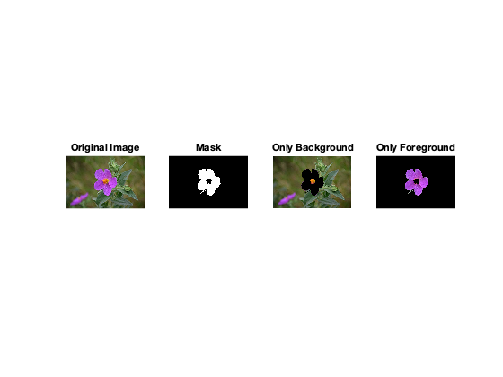
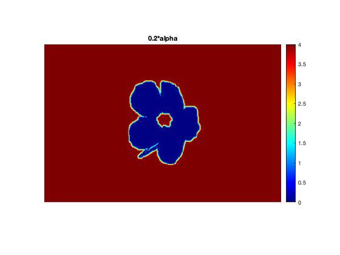
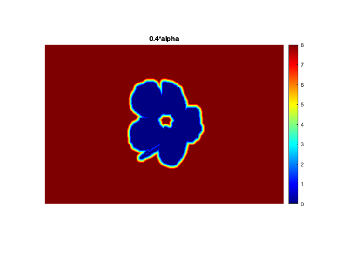
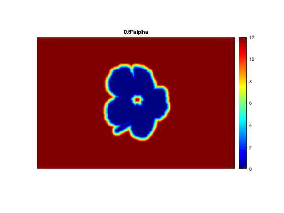
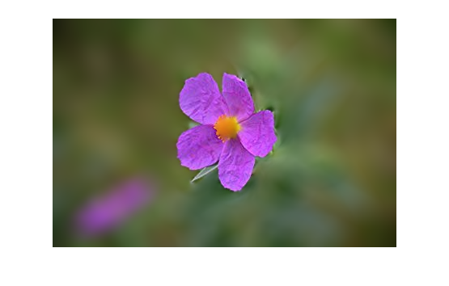
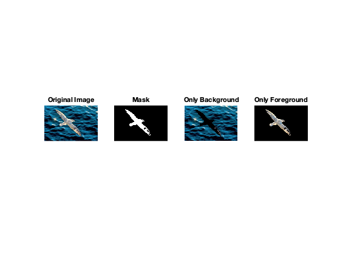

Q3: Background blur
Contents
The Algorithm:
- Apply Mean Shift Segmentation (use code from the previous part) and knnsearch (with k=2) to get 2 segments. Then use the built-in function bwareafilt to extract the largest contour. For both bird and the flower, the largest contour luckily turns out to be the actual foreground. In other cases, we will need manual intervention in this step. The foreground mask is stored in the images/ directory for quickly running the code.
- Use Canny Edge detection (built-in MATLAB function) to get the boundary of the foreground.
- Initialise a matrix (Same size as that of image) with all alphas where (i,j) entry denotes the minimum distance of the pixel from the foreground mask. Then iterate over all the boundary pixels. For each boundary pixel, iterate over the radius from 1 to alpha and find all pixels (i,j) such that their distance from current boundary pixel is between r-1 and r. Set matrix(i,j) to min(matrix(i,j), r). Set radius for all pixels in the foreground to 0.
- Now, for disc blurring, iterate over all pixels in the image. If radius = 0 (foreground), do nothing. Otherwise, use the built-in MATLAB function fspecial(r, 'disk') to construct the disc filter and apply it to the current point.
Image of a flower
For mean shift: Gaussian kernel bandwidth for the spatial feature : 150 Gaussian kernel bandwidth for the color feature : 60 Number of Iterations : 30
Variation of r with distance from foreground
  Final image after blurring
Image of a bird
Image is downsampled by 0.25 due to computational constraints. As a result, alpha = 40*0.25 = 10. For mean shift: Gaussian kernel bandwidth for the spatial feature : 30 Gaussian kernel bandwidth for the color feature : 40 Number of Iterations : 30